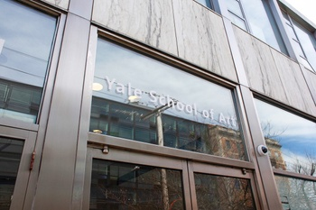

YALE SCHOOL OF ART
Yale School of Art 1156 Chapel Street, POB 208339 New Haven, Connecticut, 06520-8339
Yale School of Art 1156 Chapel Street, POB 208339 New Haven, Connecticut, 06520-8339
The Yale School of Art is a graduate school that confers MFAs in Graphic Design, Painting/Printmaking, Photography, and Sculpture; and offers undergraduate-level art courses to Yale College students. Our website exists as an ongoing collaborative experiment in digital publishing and information sharing. It functions as a wiki—all members of the School of Art community have the ability to add new, and edit most existing content.
Editor Details
CALENDAR
Official School of Art COVID-19 Updates:
For up-to-date information from the university, visit Yale’s COVID-19 website >>
Poster design by Kathryn-Kay Johnson, Graphic Design MFA ‘22, and Kyle Richardson, Graphic Design MFA '23.
Opening Thursday, March 17, 6–8PM EST, open through April 21, 2022
AFAM, 211 Park Street
The House Open Hours: Sunday – Thursday: 4-10PM; Friday: 4-8PM; Saturday: 1-5PM
For the past 50 years, the Yale Afro-American Cultural Center has served as an axis of political, cultural, and social exchange between Black Yale students and community members. “Brought it Home: A Continuum” is a cross-disciplinary collaboration organized by Yale School of Art MFA Students.
Exhibition identity by Han Gao and Miguel Gaydosh, Graphic Design MFAs ‘22.
2022 MFA Thesis Exhibition in Sculpture
Mar. 28 – Apr. 5, 2022
Green Hall Gallery, 1156 Chapel Street
Next Day Soup, the 2022 Sculpture Graduate Thesis Show, will be open from March 28 - April 5 and features the work of Jannick Deslauriers, Riley Duncan, Pap Souleye Fall, Cristóbal Gracia, Erik Nilson and Lucas Yasunaga.
Spring 2022 exhibitions are open only to the Yale community.
Full information at art.yale.edu/exhibitions >
Painting/Printmaking Group 1:Jan 31 – Feb 10, 2022
Painting/Printmaking Group 2:Feb 22 – Mar 4, 2022
Sculpture:Mar 26 – Apr 5, 2022
Undergraduate Thesis: Apr 11 – 16, 2022
Photography: Apr 26 – May 1, 2022
Graphic Design:May 11 – 23, 2022
Inaugural Yale School of Art Annual: no white walls
— March 28 – April 10, 2022
Community workshops tackle the job of a working artist save the date for virtual open studios 2022: april 9 & 10 first in-person lectures now on youtube alums gather in los angeles to celebrate sam messer. Read more...
The Venice Biennale’s visual identity for the 2022 edition is based on works by Felipe Baeza. Courtesy of the Venice Biennale. Read more...
The Yale School of Art invites applications worldwide for a tenured or tenure-track faculty appointment in the area of Graphic Design to begin July 1, 2022. Full information & apply...
The Yale Arts Apprenticeship Program is an initiative that connects Yale undergraduates, particularly those on financial aid, with professional arts practitioners of any discipline. As an option within Yale’s Summer Experience Award (SEA) funding model, the Arts Apprenticeship must fulfill the same basic requirements. Additional details, as well as those specific to the Arts Apprenticeship are included below. Yale faculty, alumni, or other arts practitioners interested in featuring positions through the program should contact Yale’s Creative Careers advisor. Which Opportunities are Eligible? Must be at least 30 hours/week, for at least 8-weeks over the summer months. Those 8-weeks do not have to be continuous if the mentoring Arts Practitioner agrees on a different schedule. The time commitment need not all be in direct contact with the Arts Practitioner. Independent projects, tasks, research, etc. can comprise much of the experience, as long as the Arts Practitioner is checking in regularly with the student to provide oversight and career-based context. The opportunity cannot be with a for-profit organization. The engagement for an Arts Apprenticeship should be directly with an individual Arts Practitioner and not with a company. The only exception to this would be if the company overseeing the apprenticeship were a registered non-profit organization. For more information: https://ocs.yale.edu/channels/arts-apprenticeship/ To post a job, contact: https://ocs.yale.edu/staff-list/#derek-i-webster
Hey everyone! I’ve been mapping public art in New Haven as part of my nonprofit project ArtAround and I’d love to invite you to join me, or just check it out and see what you think.
Lindsey
New Haven map
ArtAround homepage
Containing those events open to the public
Containing events and exhibitions hosted by, led by, or featuring members of the School of Art community.
Containing those events open only to the SoA community.
We publish two newsletters during the academic year:
News From New Haven — A public monthly newsletter about news and events happening on campus.
Week at SoA — A weekly community-only email listing SoA events as well as public and university events in New Haven.